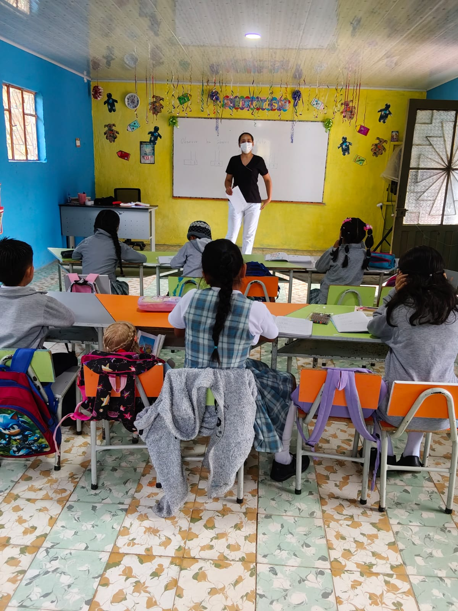
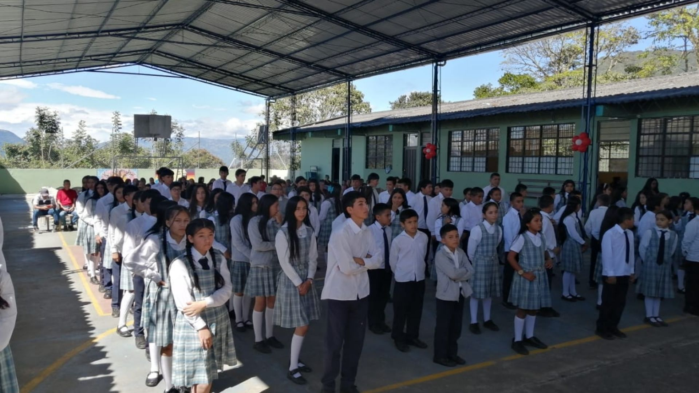
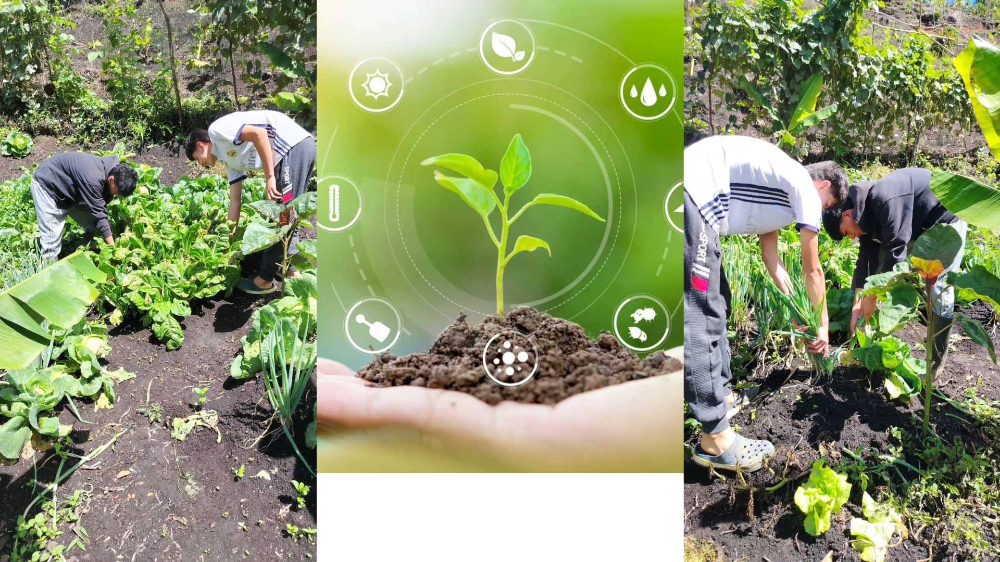
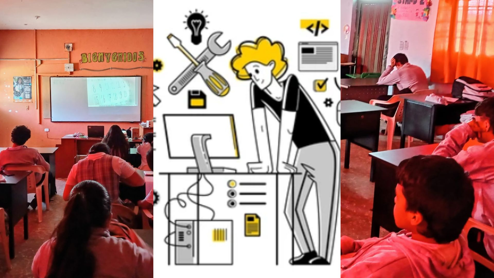

Brindamos formación básica integral en lectura, escritura, matemáticas y valores, fortaleciendo el desarrollo personal y social de nuestros estudiantes desde los primeros años.

Desarrollamos competencias académicas en ciencias, lenguaje y pensamiento crítico, preparando a los estudiantes para asumir nuevos retos educativos y personales.

Ofrecemos formación en producción agrícola y pecuaria, promoviendo el cuidado del medio ambiente y el desarrollo sostenible en el sector rural.

ormamos estudiantes en el uso de herramientas tecnológicas, programación y manejo de sistemas, preparándolos para el mundo digital y laboral.